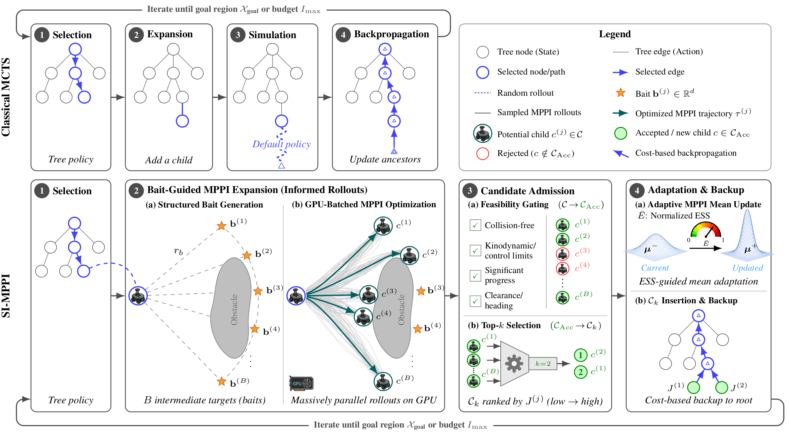

Motivation
Autonomous mobile robots navigating large-scale, cluttered environments, such as warehouses, factories, hospitals, and greenhouses, must plan long, collision-free routes while respecting their motion constraints. Kinodynamic motion planning is particularly challenging because it requires coupling long-horizon decisions, such as selecting passages around obstacles, with the generation of dynamically feasible trajectories.
Existing planners involve different trade-offs. Sampling-based planners, such as Rapidly-exploring Random Trees (RRTs) and their variants, may spend substantial computation exploring task-irrelevant regions and constructing dynamically feasible local connections; graph- and lattice-based planners depend on state-space discretization or predefined motion primitives. Meanwhile, Monte Carlo Tree Search (MCTS) can adaptively explore competing long-horizon alternatives but faces large branching factors in continuous control spaces, whereas Model Predictive Path Integral (MPPI) control efficiently optimizes local trajectories under nonlinear dynamics yet remains susceptible to obstacle-induced local minima.
To address these complementary limitations, we propose Search-Informed MPPI (SI-MPPI), a kinodynamic motion planning framework that tightly integrates MCTS-based tree search with GPU-batched MPPI optimization: MCTS explores competing long-horizon routes, while MPPI generates cost-informed, dynamically feasible motion candidates that, once admitted, form the search-tree edges.
Contributions
-
1Unified search–optimization framework
Rather than relying on exact boundary-value steering, predefined motion primitives, or purely random control propagation, SI-MPPI builds an asymmetric search tree from admitted MPPI-optimized motion segments, thereby coupling long-horizon global search with local nonlinear trajectory optimization.
-
2Bait-guided MPPI expansion
We develop a GPU-batched expansion mechanism that optimizes finite-horizon control sequences toward multiple retained baits in parallel and incorporates adaptive bait handling, feasibility gating, and top-\(k\) selection, enabling computationally efficient, sparse, and directed tree growth in continuous state–action spaces.
-
3ESS-guided adaptation and backpropagation
We leverage the effective sample size (ESS) to adapt the MPPI nominal control mean, providing informed warm starts for subsequent expansions, while cost-based backpropagation updates the tree statistics to guide global search.
Method
Key idea
The core concept of SI-MPPI is to replace the conventional expansion and default-policy simulation stages of MCTS with a unified bait-guided MPPI expansion, while retaining Upper Confidence Bound (UCB)-based selection and cost-based backpropagation. The resulting four-stage planning cycle is illustrated below and detailed in the following steps.


-
1Selection
A UCB-based tree policy traverses the search tree to select an unexpanded node. Node rewards are initialized from the negative costs of their incoming MPPI segments, while the reward estimates used by UCB are min–max normalized among visited siblings to keep the exploration and exploitation terms on comparable scales.
-
2Bait-guided MPPI expansion
From the selected node, \(B\) baits are distributed along a forward-oriented arc of radius \(r_b\). Adaptive bait handling retracts invalid baits and discards those that remain invalid. GPU-batched MPPI then optimizes finite-horizon control sequences toward the retained baits in parallel, generating candidate motion segments.
-
3Candidate admission
The MPPI candidates generated from the selected node undergo feasibility gating for collision safety and sufficient progress. Top-\(k\) selection then retains at most \(k_b\) of the lowest-cost accepted candidates, adding their terminal states as child nodes and their motion segments as tree edges.
-
4Adaptation & backup
Following candidate admission, ESS-guided switching between moment-matching and winner-step updates adapts the MPPI nominal control mean to warm-start subsequent expansions. Cost-based backpropagation then updates node rewards and visit counts along the selected tree path to guide subsequent UCB selection.
Benchmark Comparisons
We compare SI-MPPI with kinodynamic MCTS, LQR-RRT\(^{*}\) and Informed Kinodynamic RRT\(^{*}\) (IK-RRT\(^{*}\)) on four \(100\,\mathrm{m}\times 100\,\mathrm{m}\) occupancy-grid maps. All four planners succeeded in all five trials on every map.
Pick a map to compare the planners side by side
| Method | \(T_{\mathrm{plan}}\,(T_{\mathrm{conv}})\) [\(\mathrm{s}\)] \(\downarrow\) | \(\ell_{\Gamma}\) [\(\mathrm{m}\)] \(\downarrow\) | \(\sigma_{\omega}\) [\(\mathrm{rad\,s^{-1}}\)] \(\downarrow\) | \(a_{\omega,\mathrm{rms}}\) [\(\mathrm{rad\,s^{-2}}\)] \(\downarrow\) | \(N_{\mathrm{tree}}\) \(\downarrow\) |
|---|---|---|---|---|---|
| MCTS | \(0.32 \pm 0.24\) | \(63.30 \pm 4.85\) | \(0.45 \pm 0.24\) | \(1.97 \pm 0.42\) | \(503.40 \pm 271.24\) |
| LQR-RRT\(^{*}\) | \(354.60 \pm 77.62\,(9.99 \pm 19.31)\) | \(72.11 \pm 6.95\) | \(0.89 \pm 0.06\) | \(6.98 \pm 0.33\) | \(3791.40 \pm 343.74\) |
| IK-RRT\(^{*}\) | \(231.97 \pm 3.80\,(79.56 \pm 73.32)\) | \(58.18 \pm 0.54\) | \(0.98 \pm 0.14\) | \(9.35 \pm 0.94\) | \(9370.20 \pm 138.47\) |
| SI-MPPI (Ours) | \(4.12 \pm 1.77\) | \(60.62 \pm 1.23\) | \(0.10 \pm 0.02\) | \(0.25 \pm 0.06\) | \(216.20 \pm 133.01\) |
| Method | \(T_{\mathrm{plan}}\,(T_{\mathrm{conv}})\) [\(\mathrm{s}\)] \(\downarrow\) | \(\ell_{\Gamma}\) [\(\mathrm{m}\)] \(\downarrow\) | \(\sigma_{\omega}\) [\(\mathrm{rad\,s^{-1}}\)] \(\downarrow\) | \(a_{\omega,\mathrm{rms}}\) [\(\mathrm{rad\,s^{-2}}\)] \(\downarrow\) | \(N_{\mathrm{tree}}\) \(\downarrow\) |
|---|---|---|---|---|---|
| MCTS | \(11.73 \pm 4.77\) | \(187.76 \pm 28.07\) | \(0.32 \pm 0.12\) | \(1.35 \pm 0.27\) | \(13191.20 \pm 5516.10\) |
| LQR-RRT\(^{*}\) | \(250.23 \pm 10.99\,(1.33 \pm 0.20)\) | \(146.17 \pm 7.87\) | \(0.92 \pm 0.06\) | \(7.09 \pm 0.18\) | \(3762.00 \pm 30.21\) |
| IK-RRT\(^{*}\) | \(37.45 \pm 9.43\,(31.15 \pm 9.65)\) | \(119.41 \pm 4.34\) | \(0.66 \pm 0.11\) | \(6.03 \pm 0.74\) | \(3465.60 \pm 354.50\) |
| SI-MPPI (Ours) | \(5.48 \pm 3.27\) | \(118.60 \pm 1.80\) | \(0.11 \pm 0.01\) | \(0.27 \pm 0.03\) | \(338.40 \pm 255.27\) |
| Method | \(T_{\mathrm{plan}}\,(T_{\mathrm{conv}})\) [\(\mathrm{s}\)] \(\downarrow\) | \(\ell_{\Gamma}\) [\(\mathrm{m}\)] \(\downarrow\) | \(\sigma_{\omega}\) [\(\mathrm{rad\,s^{-1}}\)] \(\downarrow\) | \(a_{\omega,\mathrm{rms}}\) [\(\mathrm{rad\,s^{-2}}\)] \(\downarrow\) | \(N_{\mathrm{tree}}\) \(\downarrow\) |
|---|---|---|---|---|---|
| MCTS | \(3.37 \pm 0.82\) | \(209.79 \pm 17.92\) | \(0.30 \pm 0.08\) | \(1.46 \pm 0.08\) | \(6039.80 \pm 716.24\) |
| LQR-RRT\(^{*}\) | \(142.37 \pm 51.42\,(12.60 \pm 20.40)\) | \(177.97 \pm 24.61\) | \(0.96 \pm 0.02\) | \(7.40 \pm 0.15\) | \(2965.60 \pm 380.25\) |
| IK-RRT\(^{*}\) | \(37.38 \pm 14.07\,(22.13 \pm 18.95)\) | \(138.28 \pm 18.49\) | \(0.70 \pm 0.07\) | \(6.41 \pm 0.85\) | \(4117.80 \pm 803.89\) |
| SI-MPPI (Ours) | \(3.95 \pm 1.02\) | \(111.69 \pm 7.57\) | \(0.12 \pm 0.01\) | \(0.29 \pm 0.01\) | \(240.40 \pm 75.12\) |
| Method | \(T_{\mathrm{plan}}\,(T_{\mathrm{conv}})\) [\(\mathrm{s}\)] \(\downarrow\) | \(\ell_{\Gamma}\) [\(\mathrm{m}\)] \(\downarrow\) | \(\sigma_{\omega}\) [\(\mathrm{rad\,s^{-1}}\)] \(\downarrow\) | \(a_{\omega,\mathrm{rms}}\) [\(\mathrm{rad\,s^{-2}}\)] \(\downarrow\) | \(N_{\mathrm{tree}}\) \(\downarrow\) |
|---|---|---|---|---|---|
| MCTS | \(8.45 \pm 3.23\) | \(249.43 \pm 3.37\) | \(0.26 \pm 0.10\) | \(1.33 \pm 0.25\) | \(12397.20 \pm 3786.59\) |
| LQR-RRT\(^{*}\) | \(151.93 \pm 39.88\,(48.12 \pm 67.90)\) | \(255.34 \pm 14.73\) | \(0.95 \pm 0.07\) | \(7.05 \pm 0.38\) | \(3359.20 \pm 247.28\) |
| IK-RRT\(^{*}\) | \(16.98 \pm 6.33\,(5.69 \pm 7.18)\) | \(224.89 \pm 8.83\) | \(0.80 \pm 0.04\) | \(7.21 \pm 0.50\) | \(1829.20 \pm 104.73\) |
| SI-MPPI (Ours) | \(19.98 \pm 6.44\) | \(264.68 \pm 5.71\) | \(0.11 \pm 0.01\) | \(0.28 \pm 0.03\) | \(1290.40 \pm 401.26\) |
Results at a Glance
Results are aggregated from the five-trial means across the four benchmark maps, with equal weight assigned to each map.
- \(15.4\times\) smaller average search trees than kinodynamic MCTS \(N_{\mathrm{tree}}\): \(521\) vs. \(8{,}033\) nodes
- \(21.8\%\) shorter average paths than kinodynamic MCTS \(\ell_{\Gamma}\): \(138.90\) vs. \(177.57\,\mathrm{m}\)
- \(26.8\times\) / \(9.7\times\) lower average planning time than LQR-RRT\(^{*}\) / IK-RRT\(^{*}\) \(T_{\mathrm{plan}}\): \(8.38\,\mathrm{s}\) on average
- \(4.8\text{--}37\times\) lower RMS angular acceleration than the baselines across all four maps \(a_{\omega,\mathrm{rms}}\): \(4.8\text{--}7.9\times\) vs. MCTS; \(22\text{--}37\times\) vs. RRT\(^{*}\)-based planners
Single-Branch Retention (\(k_b = 1\))
Reducing the branching limit \(k_b\) from its default value of \(3\) to \(1\) retains only the lowest-cost accepted candidate from each expansion, yielding a single-branch search tree. Across five trials per map, this reduces the average planning time from \(8.38\) to \(1.57\,\mathrm{s}\) and the average tree size from \(521.35\) to \(28.32\) nodes, but lowers the success rate from \(100\%\) to \(80\%\) (\(40\%\) on 4Moons and \(80\%\) on MGate), as no alternative branches remain to explore when the search encounters a dead end.
Pick a map to compare the default planner with \(k_b = 1\)
Each map presents a successful \(k_b=1\) run alongside the corresponding default SI-MPPI run (\(k_b=3\)) from the benchmark comparisons above.
Additional Runs and Failure Cases
The first video (upper-left) shows SI-MPPI with winner-cost backpropagation finding a shorter path on MGate (\(\ell_{\Gamma}=219.75\,\mathrm{m}\)) than in the expected-cost run presented in the Benchmark Comparisons section (\(267.03\,\mathrm{m}\)), comparable to the baseline runs (\(216.38\text{--}231.43\,\mathrm{m}\)). The remaining three videos illustrate cases in which SI-MPPI, MCTS, and LQR-RRT\(^{*}\) fail to reach the goal within their respective iteration budgets \(I_{\max}\).
These supplementary runs are not included in the five-trial benchmark results reported in Table I of the article.
BibTeX
@misc{mohamed2026simppi,
title = {Search-Informed {MPPI} for Kinodynamic Motion Planning via {Monte Carlo} Tree Expansion},
author = {Mohamed, Ihab S. and Liu, Lantao},
year = {2026},
note = {Under review}
}